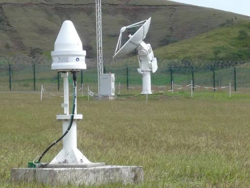

// Réseau mondial · choisissez une station
Les stations qui tirent sur la Lune
Cliquez sur une station pour demander l'accès.

STATION DE BOURAKÉ · BOULOUPARIS · NOUVELLE-CALÉDONIE
✔ Station disponible · accès autorisé
Liaison établie avec la station de Bouraké. Votre établissement est autorisé à utiliser la salle de tir pendant la fenêtre en cours.
StationBOURAKÉ-NC
État● EN LIGNE
LaserPRÊT
AutorisationEL-NC-0472